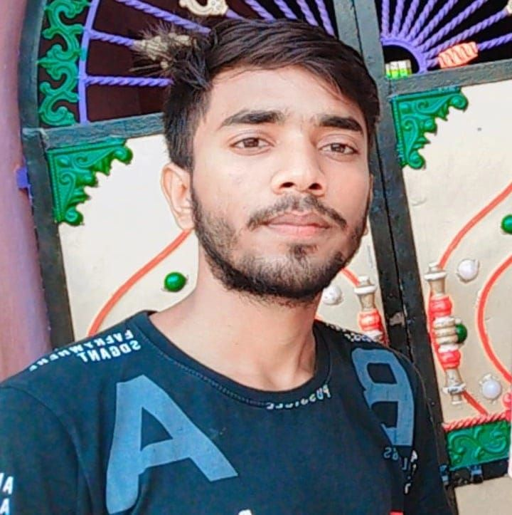

Amir Sohel Sardar
B.Tech Student, Department of Computer Science & Engineering, Jalpaiguri Government Engineering College
Biography
I am Amir Sohel Sardar, currently pursuing a Bachelor of Technology (B.Tech) in Computer Science and Engineering Department from Jalpaiguri Government Engineering College, with a strong passion for AI, website making, software development, etc. My academic journey has provided me with a solid foundation in programming, and I am enthusiastic about applying these concepts in practical settings.
Area of Interests
- ➤ Data Structure & Algorithm
- ➤ Fullstack Web Development
- ➤ Operating System
- ➤ Artificial Intelligence
- ➤ Data Base Management System(DBMS)
Education
- ➤ B.Tech. in Computer Sc. & Engg. from Jalpaiguri Government Engineering College
- ➤ Higher Secondary(Science) Burdwan C.M.S High School, Purba Bardhaman, WBCHSE Board, West Bengal
- ➤ Secondary Brindaban Pur S.S High School, Murshidabad, WBBSE Board, West Bengal
- ➤ Upto Class Five Narayan Pur Sardar Para S.S.K, Narayan Pur, Nadia, West Bengal
Skill
- ➤ C, C++, Java, JavaScript, MongoDB, Node.JS, SQL
- ➤ Data Structure & Algorithms
- ➤ Machine Learning
- ➤ Cyber Security
- ➤ Artificial Intelligence
- ➤ Web Development
Other Field
- ➤ NEET-2021 aspirant in Aakash Institute (Central Kolkata)
- ➤ A Student Of Al Ameen Mission (Khalat Pur, Uluberia, Purba Bardhaman)
- ➤ Extracurricular activity is writing Bengali poems and recitation also